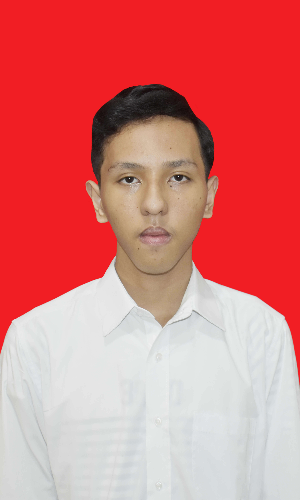

Profile

Undergraduate student of Universitas Negeri Jakarta digital business study program who has interest in business and information technology field. Have good analytical skills and skills in the use of basic software. Active in organizational activities and have a passion to continue learning and developing.
Education
-
Undergraduate student in Digital Business - Jakarta State University
2024 - Present
Senior High Scool - SMAN 4 Depok
2021 - 2024
Junior High Scool - SMPN 23 Depok
2018 - 2021